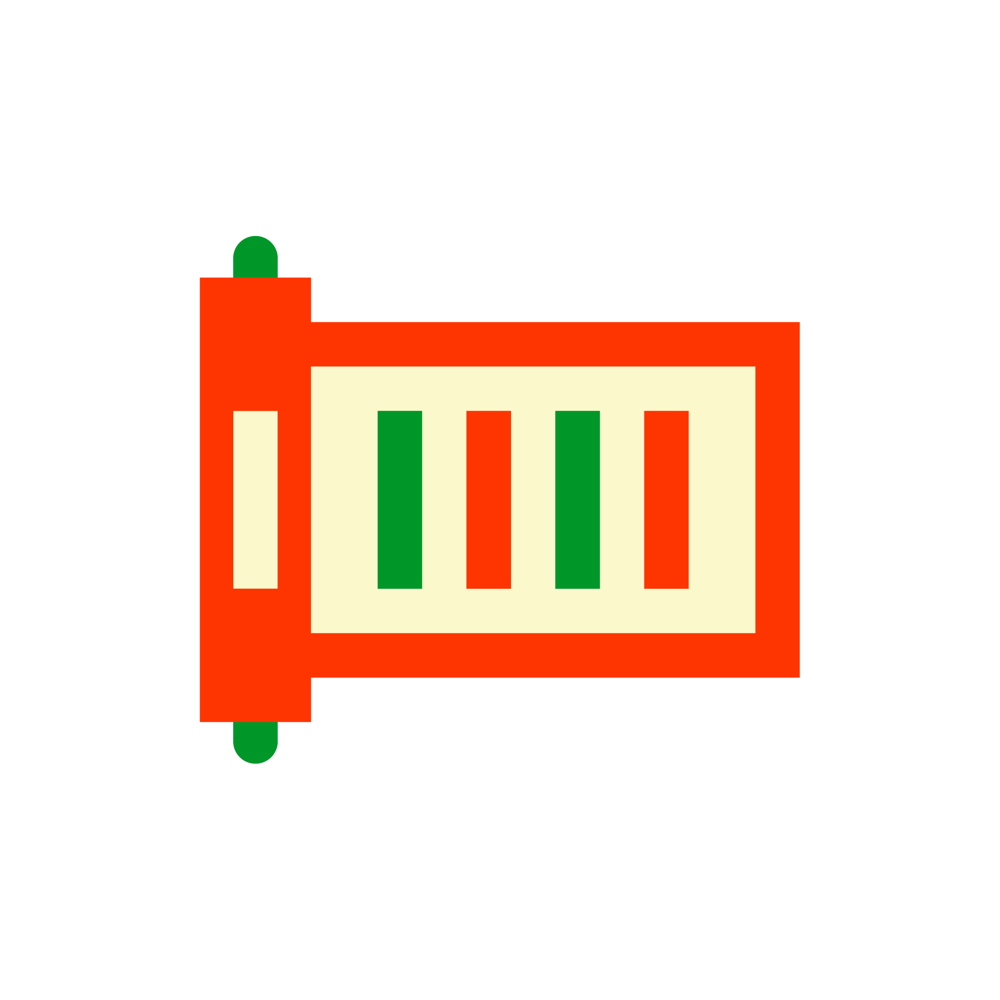

検索上位を狙うための記事づくりから、AIに参照されるための情報づくりへ。企業の情報発信では、考えるべき相手が検索エンジンだけではなくなっています。なかでも注目されているのがPR TIMESです。Ahrefsが2026年4月に公表した分析では、ChatGPTの日本語クエリで引用されたドメインのランキングで、prtimes.jpは2位でした。PR TIMESは、メディア向けの配信先であるだけでなく、AIが企業の公式情報を読み取る公開ページにもなっています。
ただし、やみくもにプレスリリースを出せばよいわけではありません。Googleは、AI表示に特別な追加要件はない一方、重要な内容はテキストで示すことや、関連する複数のサブトピックまで含めて情報が探せることを案内しています。発表の要点、根拠となる数字、補足情報まで一つのページで分かる形に整えることが、AIに参照されるためのPR TIMESでは欠かせません。
本記事では、なぜPR TIMESがAIに参照されるのか、そして参照されやすいプレスリリースはどう作るのかを整理します。
検索上位を狙うためのコンテンツづくりから、AIに参照されるための情報づくりへ。企業の情報発信は、いまその方向へ意識が移っています。なかでも注目されているのが、PR TIMESです。
Ahrefsが2026年4月に公表した分析では、ChatGPTの日本語クエリで引用されたドメインのランキングで、prtimes.jpは2位でした。引用数は95,655です。Ahrefsは、この結果について、プレスリリースがAIに「公式情報」として認識・引用されている動きだと説明しています。PR TIMESは、メディアに情報を届ける場であるだけでなく、AIが企業の発表を参照する公開情報の場にもなっています。
参照：Ahrefs「AI が最も頼りにしているドメイン TOP 10」
https://ahrefs.com/blog/ja/brand-radar-top-10-cited-domains-2026-update/
ただ、プレスリリースは出せばよい、数を増やせばよい、という話ではありません。AIに参照されることを考えるなら、なぜPR TIMESが参照されるのか、どんな情報が拾われやすいのか、どのように書けば発表の内容や根拠が正しく伝わるのかまで考える必要があります。
また、プレスリリース自体の濫造は、企業のブランディングを低下させるため、当然質にもこだわる必要があります。
なぜPR TIMESはAIに参照されるのでしょうか。また、AIに参照されるプレスリリースは、どのような点に注意して作ればよいのでしょうか。次章から、その順に見ていきます。
PR TIMESがAIに参照されやすいのは、知名度があるからだけではありません。公開されていて、見つけやすく、要点が冒頭で分かり、発信主体と根拠も確認しやすい。そうした条件が重なっているからです。ここでは、その理由を4つに整理します。
OpenAIは、ChatGPT検索には公開サイトであれば表示されうること、要約や引用に含めるには OAI-SearchBot をブロックしないことが重要だと案内しています。Googleも、AI Overviews や AI Mode に出るために特別な追加要件はなく、通常の検索と同じく、インデックスされ、スニペット付きで表示できるページであることが前提だと説明しています。PR TIMESの robots.txt では、全ユーザーエージェントを許可し、通常のサイトマップに加えてニュース用サイトマップも公開しています。AIに見つけられるための技術的な入口が、最初から閉じていないということです。
プレスリリースの記事は、要点が早い段階で分かる形にしやすいという強みもあります。PR TIMES MAGAZINEでは、タイトルは5W2Hを端的に伝えるためのもの、サブタイトルではタイトルに入りきらなかった理由や方法を補い、タイトルとサブタイトルだけで内容がほぼ伝わる形が理想だと説明しています。リード文についても、5W2Hと具体的な数字を入れ、リード文だけで全体が理解できるように書くことが勧められています。これはAI向けに作られた特別ルールではありませんが、AIが要点をつかみ、リンク先を根拠として扱う場面を考えると、冒頭で骨子が読める型と相性がよいと考えられます。
プレスリリースは、誰が発表した情報なのかを示しやすい場でもあります。PR TIMES MAGAZINEでは、プレスリリースの基本構成として、タイトル、サブタイトル、リード文、本文、企業情報、問い合わせ先の6要素を挙げています。問い合わせ先についても、担当者名や直通の連絡先まで明記することが勧められています。
調査リリースではさらに、調査背景、調査概要、サマリー、本文、まとめを入れ、十分な回答者数を確保し、自社宣伝に寄りすぎないよう注意することが示されています。発信主体、数字の条件、問い合わせ先が同じページで確認しやすいので、AIにとっても人にとっても、根拠を追いやすい情報になりやすいわけです。
もうひとつ見逃せないのが、PR TIMESに集まる情報の量と更新頻度です。PR TIMESの公式発表によると、利用企業数は12万1,000社超、月間のプレスリリース件数は4万6,000件超、累計では200万件超です。国内上場企業の64%超が利用しているとも案内されています。新しい発表が継続して出てきて、しかも企業自身が出す一次情報がまとまっている。AIが新しい公開情報を拾いにいく場として、PR TIMESが目に入りやすいのは自然です。
PR TIMESには、AIが読み取りやすい土台があります。とはいえ、掲載された内容が同じように参照されるわけではありません。Googleは、AI表示に特別な追加要件はないと説明し、重要な内容をテキストで示し、役に立つ信頼できる情報を出すことを基本にしています。意識したい点は、特別な細工ではなく、発表の核心と根拠を早い段階で読めるようにすることです。
プレスリリースにおいては、タイトルは5W2Hを端的に伝える場、サブタイトルは「なぜ」「どうやって」を補う場とされています。タイトルとサブタイトルだけで内容がほぼ伝わる形が理想とされ、リード文では5W2Hと具体的な数字を入れ、リードだけで全体が分かるように書くことが勧められています。
PR TIMESの発信でも、出発点は同じです。サービス名だけで終わらせず、「誰が、何を、いつ始めるのか」「何が変わるのか」を、最初に示す必要があります。
要点だけ先に書き、根拠を後ろへ回す書き方では、読み手にもAIにも内容が伝わりにくくなります。プレスリリースでは、最も伝えたいことを冒頭に置く「逆三角形」の構成が勧められています。Googleも、AI機能で扱われるページについて、重要な内容をテキストで利用できるようにしておくことを求めています。
数字を使うなら、数字が何を示すのか、対象は誰か、比較条件は何か、いつの話かまで、本文前半の近い位置で示した方が伝わります。グラフを入れる場合でも、重要な数字は本文でも拾えるようにしておく方が安定します。
Googleは、AI OverviewsやAI Modeで、ひとつの質問から関連する複数の検索を広げながら答えをつくると説明しています。発表内容だけではなく、「誰向けか」「どの課題を解決するのか」「既存の方法と何が違うのか」「いつから使えるのか」といった前提まで、一つのページに置いておく意味は大きいです。AIに参照されやすいプレスリリースは、発表だけを置く文書ではなく、発表を理解するための前提までそろえた文書です。
発表の意味をはっきりさせる材料として、調査データは相性がよいです。PR TIMESでは、調査結果を予定しているプレスリリースの理解を促すために使う方法と、調査結果そのものを新情報として配信する方法の両方が案内されています。
Googleも、役に立つ情報かどうかを見る基準として、「独自の情報、報告、調査、分析があるか」を挙げています。調査データは飾りではなく、「なぜ今、発表するのか」を示す根拠として使えます。新サービスの発表なら、必要とされる背景を示す調査結果を添える。取り組みの発表なら、社会や顧客の変化を示す数字を置く。発表の意味が一段伝わりやすくなりますし、社会性を帯び、PRとしてのメッセージを発信できます。
調査データを使うなら、数字だけを大きく見せても足りません。PR TIMESの掲載基準では、調査期間、調査主体、調査対象、有効回答数、調査方法を本文内に記載することが条件とされ、調査期間の終了日から6か月以内の結果であることも求められています。
調査リリースのガイドでも、調査した理由を明記し、グラフには「グラフタイトル」「数値」「n数」を必ず入れるよう案内しています。数字がひとり歩きしないように、条件と背景をセットで見せることが大切です。
文字が多くなりやすい章だからこそ、グラフや図解は役に立ちます。肝心な数字や結論は画像だけに置かず、本文のテキストにも残しておく方が安全です。
PR TIMESでは、基本は1プレスリリース1テーマと案内しています。新サービスの発表に、会社紹介、採用、提携、調査結果、将来構想まで詰め込むと、何がニュースなのかがぼやけます。
調査データを使う場合も同じです。調査は発表の背景を支える証拠として使うのか、調査結果そのものをニュースとして出すのかを、先に決めた方がページ全体の焦点が定まります。AIに参照されやすいプレスリリースは、情報量が多い文章ではなく、論点が整理された文章です。
最後に、同じ「新サービスの発表」を題材に、AIに参照されにくい書き方と参照されやすい書き方を並べます。違いを生むのは、文章の上手さではなく、核心・根拠・補足の順番です。
営業組織を変える、画期的な新サービスが登場
サブタイトル多くの企業が抱える課題を解決し、次世代の営業活動を支援
リード文株式会社ABCは、このたび営業現場を大きく変える新サービス「SalesDock」を開始します。近年は営業活動の複雑化が進み、多くの企業が課題を抱えています。当社調査でも多くの担当者が営業業務の非効率に悩んでいることが分かっており、SalesDockはそのような悩みを一気に解決するサービスです。
本文冒頭営業現場では、さまざまな課題が山積しています。当社が実施した調査でも、約8割が営業活動に課題を感じていることが判明しました。SalesDockはAIを活用し、営業活動のすべてを変革する次世代型プラットフォームです。今後、営業の新しいスタンダードとして市場をけん引してまいります。
BtoB営業責任者312人調査、66.4%が「見積作成が属人化している」と回答
株式会社ABC、営業属人化を解消する営業支援クラウド「SalesDock」を2026年4月2日に提供開始
従業員300人以上の企業を対象に調査。提案書・見積書の作成工程を標準化し、営業現場のばらつき解消を支援
リード文営業支援クラウドを開発する株式会社ABC（東京都港区、代表取締役 山田太郎）は、BtoB企業の営業責任者312人を対象に実施した調査で、66.4%が「見積作成が属人化している」と回答した結果を受け、提案書・見積書の作成工程を標準化する営業支援クラウド「SalesDock」を2026年4月2日に提供開始します。見積テンプレートの共通化、承認フローの可視化、案件ごとの進行状況の一元管理により、担当者ごとのばらつきを抑え、営業部門の業務負荷軽減を支援します。
本文冒頭：営業現場では、「見積作成」と「提案内容のばらつき」が負担になっている株式会社ABCは、従業員300人以上のBtoB企業に勤める営業責任者312人を対象に、営業業務の属人化に関する調査を実施しました。その結果、66.4%が「見積作成が属人化している」、58.3%が「提案内容の品質に担当者差がある」、52.9%が「承認フローの遅れが受注機会の損失につながっている」と回答しました。
本文：調査結果を受け、見積・提案の標準化を支援する「SalesDock」を提供開始上記の結果を受け、株式会社ABCは営業支援クラウド「SalesDock」を2026年4月2日に提供開始します。SalesDockは、見積テンプレートの統一、承認フローの見える化、案件情報の一元管理を通じて、営業活動のばらつきを減らすサービスです。営業現場で負担が大きい見積作成と提案準備を中心に、属人化しやすい工程から改善を進められます。
Q1. SalesDockは、提案書や見積書の作成、承認、案件管理の工程が複数人にまたがるBtoB企業向けの営業支援クラウドです。
Q2. 見積テンプレートの共通化、承認フローの可視化、案件情報の一元管理ができます。
Q3. 2026年4月2日から利用開始できます。
Q4. 見積作成が属人化している企業、提案内容の品質に担当者差が出ている企業、承認フローの遅れが受注活動に影響している企業に向いています。
Q5. 料金は利用人数と利用機能に応じて個別に案内します。
ここまで見てきたように、AIに参照されるプレスリリースをつくるには、原稿だけを整えても足りません。見出しになる論点を決め、裏付けになる数字を取り、その数字が伝わる順番で本文とFAQまで設計する必要があります。
私たちIDEATECHは、2010年から戦略PR支援を行い、累計800社以上の企業を支援してきました。2,500件以上の実績を持つリサピー®は、その戦略PRの視点を、調査企画、アンケート実査、集計、プレスリリース制作まで一つにつないだサービスです。
私たちが調査PRで重視してきたのは、数字を集めることではありません。ニュースになる論点があるか。見出しになる数字があるか。業界や社会の変化として読める文脈になっているか。そこを設計してきたからこそ、支援した調査PRが月5本以上Yahoo!ニュースに取り上げられたり、150以上の専門媒体に転載・掲載されたりしてきました。
AIに参照されるプレスリリースでも、求められる考え方は同じです。発表の要点、根拠、補足情報が一つのページでつながっていること。その設計に、戦略PRで培ってきた視点がそのまま生きます。戦略PRコンサルティングの知見を生かした調査PRは、AI時代の情報流通においても引用されやすいコンテンツになると確信しています。
調査テーマ設計、設問設計、アンケート実査、集計・グラフ化、プレスリリース原稿作成、FAQ設計、公開前の最終調整までを一括で実施します。単発で1本ずつ作るのではなく、複数本を前提に論点を設計することで、AIにもメディアにも伝わる一次情報を積み上げていきます。
3本分のテーマをまとめて設計し、調査から原稿化まで一気通貫で進めます。調査付きプレスリリースを継続的に出したことがない企業や、まずは型をつくりたい企業に向いています。
単発の発表を並べるのではなく、5本全体で訴求の流れをつくりながら、調査とプレスリリースを連動させます。業界課題、顧客課題、サービス価値を行き来しながら、参照されやすい一次情報を増やしたい企業に向いています。
事業テーマと広報テーマを横断して設計し、調査データを蓄積しながら、プレスリリースを単発の告知ではなく情報資産として育てていきます。検索だけでなくAIにも継続的に参照される状態をつくりたい企業に向いています。